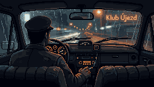

Út 20:00
Kevin
WASD: chůze · E: pivo, sednout, dveře, taxík · Enter: psát · Q: napít se · F: rána · G: ubalit · Esc: postava
E
Psát
Pít
Rána
Esc

Taxík na Šumavské
Sáček · 500 Kč
Nic, díky
Vínko
Lokál Korunní · Vinohrady · úterý večer
Za koho dneska hraješ?
Vínko
točí se první pivo…